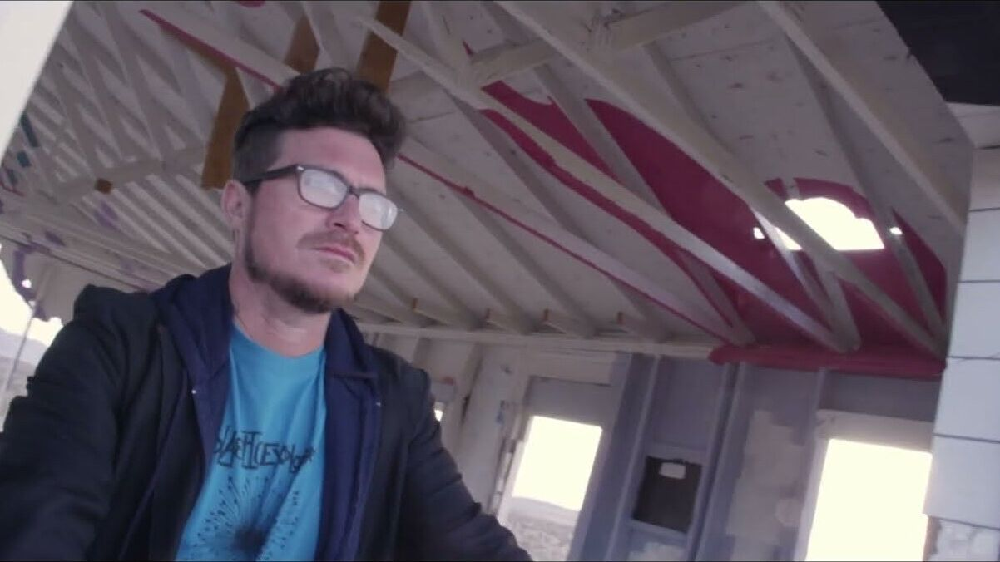
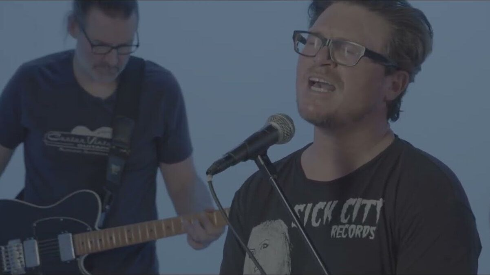
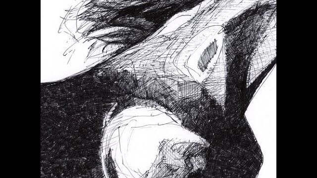

Songs and videos by Ray Argyle
Videos
Videos
-

So Far Away From It Now
On YouTube
-
not my problem anymore
On YouTube
-

you have no idea
On YouTube
-

Lost To You
Directed by Ari Davis, 2010
-

CURRENCY
Directed by Ari Davis, 2009
Photos
Live


Contact
Get in touch
Write, or follow along on YouTube, Instagram and Facebook.